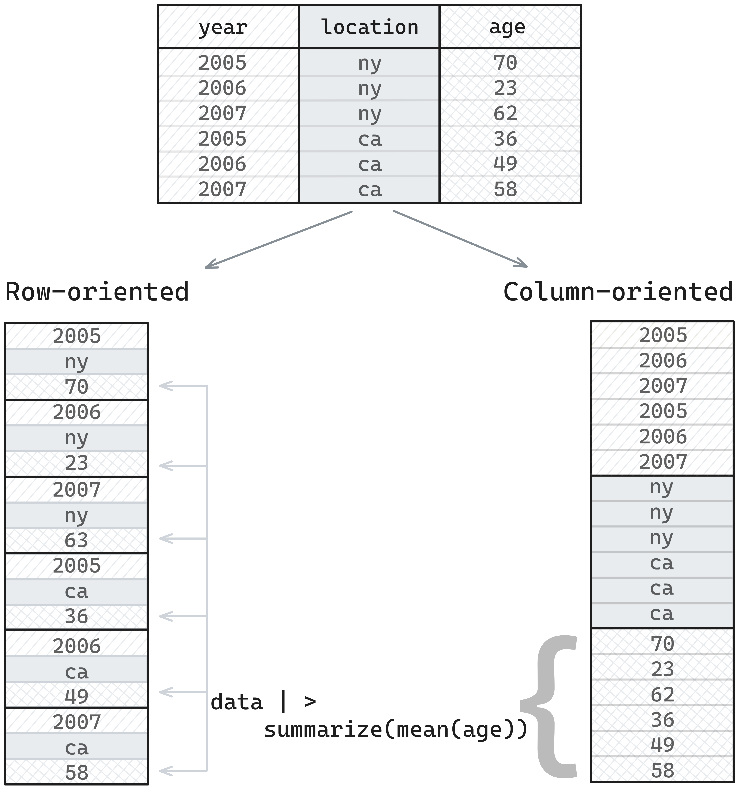
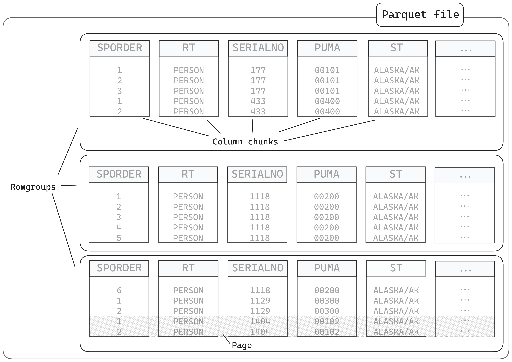

Today I was on Posit’s DS Lab talking about Parquet! In this blog post, I’ve included the notes I wrote to prep for the session, which cover a lot of what we talked about today.
What is Parquet and why should you care?
Smaller than equivalent CSV files so you can work with and share bigger datasets more easily
Way faster to work with than CSVs
Stores data types so less room for error or custom code needed to convert things when you read it in
How?
Smaller than equivalent CSV - internally uses encoding and compression and is a binary format (made for computers not humans)
Faster - data stored in small pieces and in columns so can read efficiently and operate in parallel
Data types - Parquet files store metadata internally about the data itself but also and how it’s been saved
We’ll look at these more closely later!
What packages do I need to work with Parquet files?
Pick one of…
arrow - for all features, including working with multi-file datasets
nanoparquet - for a no-dependency package which has most (but not all) features but can be slower on larger datasets
Today we’ll focus on {arrow} but some examples with {nanoparquet}
Using {arrow} vs. using {nanoparquet}
{arrow}
{nanoparquet}
Dependencies
C++ library (pre-built binaries available)
None
Read/write single files
✅
✅
Multi-file & partitioned datasets
✅
❌
Larger-than-memory data
✅
❌
Remote files (S3, HTTP)
✅
❌
Filter rows before reading
✅
❌
Append to existing files
❌
✅
Full Parquet type support
✅
Most types
Nested types (lists of lists)
✅
❌
The arrow package contains the full functionality, but nanoparquet is great when you have small files and really simple use cases or want to append data to an existing Parquet file.
How do you open a Parquet file?
You can use read_parquet() from arrow (or nanoarrow!)
library(arrow)
Attaching package: 'arrow'
The following object is masked from 'package:utils':
timestamp
library(tibble)taxi <-read_parquet("https://arrow-datasets.s3.amazonaws.com/nyc-taxi-tiny/year=2019/month=1/part-0.parquet")# Below is the same file but locallytaxi <-read_parquet("taxi-mini.parquet")# it's read in as a tibble automaticallyclass(taxi)
Parquet has its own data types so it can be language-agnostic. In other words, files you write in one R can be read in Python, Java, Rust, etc, and vice versa.
The Arrow R package handles the mapping between R types and Parquet types automatically, which means you can read and write data to/from Parquet files in R and it’ll remain the same.
Why do types matter?
1. Ambiguous data
Let’s say I have a data frame containing zip codes. When I first create it, it’s character data in R.
zip_data <-data.frame(state =c("New York", "New Jersey"), zip =c("11213", "07001"))zip_data
state zip
1 New York 11213
2 New Jersey 07001
But what if I write it to a CSV and read it back into R?
The CSV reader has tried to guess the type and assumed it’s an integer and so we miss the leading 0 from the New Jersey zip.
If we look at the raw CSV file, it’s actually been saved as a string.
"state","zip"
"New York","11213"
"New Jersey","07001"
But as CSV readers have to guess data types, it’s extra work. Luckily I know that readr has a CSV reader which handles things better.
library(readr)read_csv("zip.csv")
Rows: 2 Columns: 2
── Column specification ────────────────────────────────────────────────────────
Delimiter: ","
chr (2): state, zip
ℹ Use `spec()` to retrieve the full column specification for this data.
ℹ Specify the column types or set `show_col_types = FALSE` to quiet this message.
# A tibble: 2 × 2
state zip
<chr> <chr>
1 New York 11213
2 New Jersey 07001
But I’d rather not have to know this! And what if I’m collaborating with people and sharing data and so they might read it in with the base R one and our data gets messed up.
With Parquet, storing the data type with the data means that we’re always going to get the correct type.
# A tibble: 2 × 2
state zip
<chr> <chr>
1 New York 11213
2 New Jersey 07001
2. Ordered factors
The diamonds dataset from ggplot2 has cut as an ordered factor. Easy to plot cut in order when we load the dataset directly from the ggplot2 package data.
Rows: 53940 Columns: 10
── Column specification ────────────────────────────────────────────────────────
Delimiter: ","
chr (3): cut, color, clarity
dbl (7): carat, depth, table, price, x, y, z
ℹ Use `spec()` to retrieve the full column specification for this data.
ℹ Specify the column types or set `show_col_types = FALSE` to quiet this message.
CSV files don’t have any concept of ordered factors - data is just saved as strings and so we’d need to tell R that cut is an ordered factor before plotting it to get it right. But, Parquet saves data types and so we can write the data to Parquet and back to R and it keep track of the fact it’s an ordered factor.
Rows: 87 Columns: 2
── Column specification ────────────────────────────────────────────────────────
Delimiter: ","
chr (1): name
lgl (1): films
ℹ Use `spec()` to retrieve the full column specification for this data.
ℹ Specify the column types or set `show_col_types = FALSE` to quiet this message.
starsub_csv$films[1]
[1] NA
We could transform it into e.g. a single string separated by semi-colons before writing and extract it into columns after reading, but with parquet, it’s preserved.
If we think about how data is stored in memory, it’s in a one-dimension structure - one value after another.
When we are doing analytics, we’re typically asking questions like, “what’s the mean value of this column”, or “show me only values greater than X”, and so we’re thinking about things in terms of taking data from a column and doing something with it.
If data is stored in a row-oriented format, we need to skip between different places to retrieve values for a column, but if data is stored in a column-oriented format, we can just pull retrieve the chunk where our data is stored, which is more efficient.

Parquet file chunking
A Parquet file is divided into smaller components.
rowgroups, which contain…
column chunks, which contain…
pages
They also contain metadata in the footer

Parquet file footers
The footer is the key to how Parquet files work. It the last thing that’s written to the file when saving a file, but the first thing which is read when it’s being read.
It contains:
The schema - the column name/type mapping
Metadata for the rowgroups - where they are in the file and what encoding/compression is used; this makes it faster to read subsets
Statistics - things like minimum and maximum values for columns, and how many null values - so if you’re filtering, something like Arrow can use this to skip certain sections, or count rows without too much effort
Additional metadata - like the Arrow-equivalent schema, or in Python, pandas metadata
Disclaimer: prose below here was generated with Claude, but checked by me.
Arrow vs. Parquet vs. Feather
This is the distinction that confuses everyone:
Parquet = a file format for storing data on disk (columnar, compressed, self-describing)
Arrow columnar format = a specification for how columnar data is laid out in memory - designed for zero-copy reads and fast analytics. Multiple implementations exist across languages (C++, Rust, Java, Go, etc.)
Arrow IPC format = a way to write Arrow-formatted data to disk or send it between processes, preserving the in-memory layout. Very fast to read because there’s no decoding step - the data on disk is already in Arrow format
Feather = an older name for Arrow IPC files (V1 is deprecated; V2 = Arrow IPC)
The {arrow} R package = an R interface to the Arrow C++ library, giving you tools to read/write Parquet, Arrow IPC, and CSV files, plus a dplyr backend for larger-than-memory data
In practice: Parquet is the best default for storing and sharing data. Arrow IPC can be faster to read/write but files are larger and less widely supported outside the Arrow ecosystem.
What you can and can’t store in Parquet
All standard R types (numeric, integer, character, logical, Date, POSIXct), list columns, and factor levels can be stored in Parquet. Custom R classes are preserved via metadata when round-tripping in R.
Nested data example - list columns survive the round-trip: